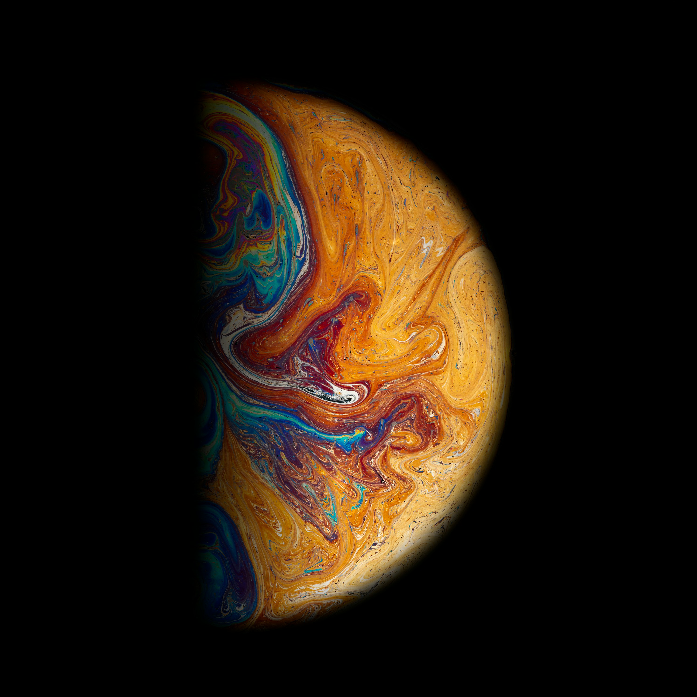
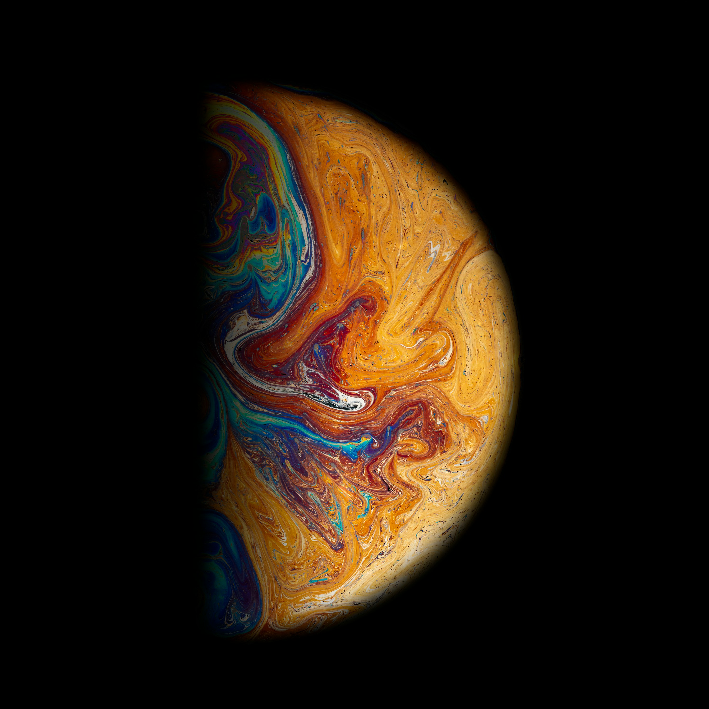

하늘꽃에 대한 이야기예요. 하늘꽃에 대해 들어보셨나요? 이야기 시작합니다! 여러분, 그거 알고 있나요? 하늘에서 떨어진 별이 꽃이 되기도 한다는 사실을요. 이 세상이 궁금한 별들은 어머니 달의 허락을 받고 땅으로 내려와 꽃이 되기도 한답니다. 그 꽃을 옛사람들은 하늘꽃이라고 불렀습니다. 하늘꽃은 낮에는 활짝 피어나 파란 하늘과 하얀 구름, 밝은 해를 바라보지만 밤이 되면 꽃봉오리를 오므리고 잠이 듭니다. 그런데 하늘꽃의 영혼은 밤마다 살그머니 꽃을 빠져나와 세상 여기저기를 구경한다고 해요. 어머니 달이 환하게 밝은 밤이면 풀숲 여기저기를 다니며 다람쥐의 이마를 쓰다듬고 여우의 수염을 잡아당기기도 한대요. 강을 건너고 바다를 넘어 저 멀리 날아가기도 하는데, 한 번 간 곳을 다시 찾는 일은 드물다고 해요. 이따금 하늘꽃의 영혼은 사람들이 사는 마을에 찾아가 어린아이들의 꿈속에 나타나기도 합니다. 꿈속에서 아이들과 신나게 달리기를 하고 숨바꼭질을 하는 거죠. 마음껏 세상 구경을 한 하늘꽃은 아침부터 저녁까지 따뜻한 햇볕을 받으며 다시 힘을 얻곤 합니다. 이따금 세상 구경이 지루해진 하늘꽃은 조금 일찍 별나라로 돌아가기도 합니다. 그렇다고 슬퍼할 건 없어요. 하늘에 돌아간 별들은 이 땅에서 경험한 일들이 얼마나 재미있었는지 뒤늦게 깨닫곤 하니까요. 별들이 반짝반짝 빛나는 건 이제 막 돌아온 별의 재미난 이야기에 깔깔대며 웃기 때문이래요. 아마 우리도 하늘꽃처럼 이 세상이 궁금해 내려온 별일지도 모른답니다.


 " height="100">
" height="100">